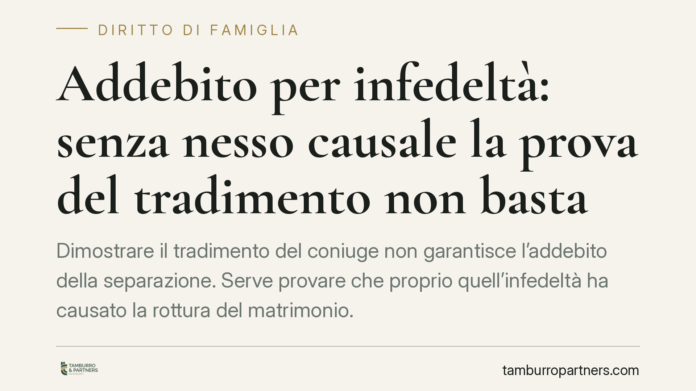

Addebito per infedeltà: senza nesso causale la prova del tradimento non basta
Dimostrare il tradimento del coniuge non garantisce l'addebito della separazione. Serve provare che proprio quell'infedeltà ha causato la rottura del matrimonio. Lo ribadisce un recente orientamento di merito, che richiama un principio ormai consolidato in Cassazione. Qui spieghiamo cosa significa in concreto, perché conta per chi affronta una separazione e quali cautele adottare sulle prove.

Il principio: tradimento provato non significa addebito automatico
Una recente pronuncia di merito è tornata su un tema ricorrente nelle cause di separazione: l'addebito per infedeltà. Il coniuge che chiedeva l'addebito aveva documentato la relazione extraconiugale dell'altro, ma la domanda è stata respinta. Il motivo non è la mancanza di prova del tradimento, bensì l'assenza di prova del nesso di causalità tra quel tradimento e la crisi coniugale.
È una distinzione che spesso sfugge. L'addebito non punisce il comportamento in sé: presuppone che la violazione dei doveri matrimoniali sia stata la causa della rottura, e non una conseguenza di una crisi già in atto.
Inquadramento normativo
I doveri reciproci dei coniugi — tra cui la fedeltà — sono fissati dall'art. 143 del Codice civile. L'addebito della separazione è disciplinato dall'art. 151, secondo comma, c.c., secondo cui il giudice può dichiararlo quando ne ricorrono i presupposti, cioè quando la separazione è conseguenza del comportamento di uno dei coniugi contrario ai doveri che derivano dal matrimonio.
Il punto è proprio quel rapporto di conseguenza. La Corte di Cassazione, anche a Sezioni Unite, ha chiarito da tempo che l'addebito richiede la prova che l'inosservanza dei doveri coniugali abbia determinato l'intollerabilità della convivenza (in questo senso si veda l'orientamento consolidato: Cass., Sez. Un., n. 9801/2005; Cass. n. 2059/2012). Se la relazione extraconiugale è intervenuta quando il matrimonio era già irrimediabilmente compromesso, il nesso causale viene meno e l'addebito non può essere pronunciato.
Sul piano probatorio vale la regola generale dell'art. 2697 c.c.: chi chiede l'addebito deve provarne i presupposti, compreso il nesso causale.
Le prove: tempi e modi contano
Un secondo profilo riguarda le prove fotografiche depositate tardivamente. Nel giudizio esaminato, le immagini sono state dichiarate inammissibili perché prodotte oltre i termini istruttori previsti.
Qui occorre una precisazione importante sul rito. Per i procedimenti instaurati a partire dal 28 febbraio 2023, la riforma Cartabia (D.Lgs. n. 149/2022) ha modificato la fase di trattazione: le memorie integrative, un tempo collocate dopo la prima udienza, sono oggi anticipate e disciplinate dall'art. 171-ter c.p.c., con termini scaglionati che si collocano prima dell'udienza di trattazione. Per i giudizi avviati prima di tale data continua ad applicarsi il previgente art. 183 c.p.c.
In entrambi i regimi il principio resta identico: le prove documentali vanno prodotte entro i termini fissati, a pena di decadenza. Una prova decisiva ma tardiva vale, processualmente, come una prova mancante.
Resta inoltre aperto il tema della liceità delle prove. Fotografie, messaggi e registrazioni possono scontrarsi con la tutela della riservatezza: materiale acquisito in modo illecito rischia di essere inutilizzabile, oltre a esporre chi lo produce a responsabilità.
Implicazioni pratiche
Per chi affronta una separazione, due conseguenze meritano attenzione.
La prima è economica. L'addebito incide sul mantenimento: il coniuge al quale la separazione è addebitata perde il diritto all'assegno di mantenimento, conservando — nei limiti dell'art. 156 c.c. e dell'art. 433 c.c. — solo il diritto agli alimenti in caso di stato di bisogno. L'addebito produce inoltre effetti sui diritti successori nei confronti dell'altro coniuge.
La seconda è strategica. Concentrare tempo e risorse sulla prova del tradimento, trascurando il nesso causale, può condurre a una domanda infondata nonostante le prove raccolte. L'addebito, inoltre, non sempre conviene: è una scelta da ponderare in base agli effetti concreti, non alla volontà di affermare un torto.
Cosa fare in concreto
- Valutare l'obiettivo reale dell'addebito: se non incide su mantenimento o successione, verificare se la domanda giova davvero.
- Documentare la cronologia della crisi: raccogliere elementi che collochino il comportamento contestato prima dell'intollerabilità della convivenza, non dopo.
- Rispettare i termini istruttori: produrre le prove documentali entro le scadenze previste dal rito applicabile (art. 171-ter c.p.c. per i giudizi post-Cartabia).
- Verificare la liceità delle prove prima di depositarle: materiale acquisito violando la riservatezza altrui può essere inutilizzabile e controproducente.
- Rivolgersi a un professionista per impostare la domanda sul nesso causale e non solo sul fatto in sé.
Il cambio di prospettiva è questo: in tema di addebito non conta solo provare la colpa, ma provare che quella colpa ha rotto il matrimonio.
*Riferimenti normativi e giurisprudenziali vanno verificati nel testo integrale della pronuncia e nella versione vigente delle norme prima di ogni decisione.*
---
Contributo informativo a cura di Tamburro & Partners Avvocati — Avv. Giuseppe Tamburro. Non costituisce parere legale.
Ogni famiglia ha il suo equilibrio.
Separazione, divorzio, affidamento, assegno: se vuoi un confronto riservato su una specifica situazione, scrivi allo studio. Ti rispondiamo entro un giorno lavorativo.